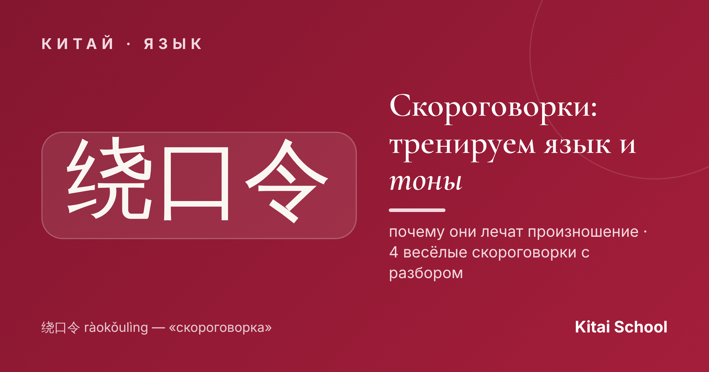
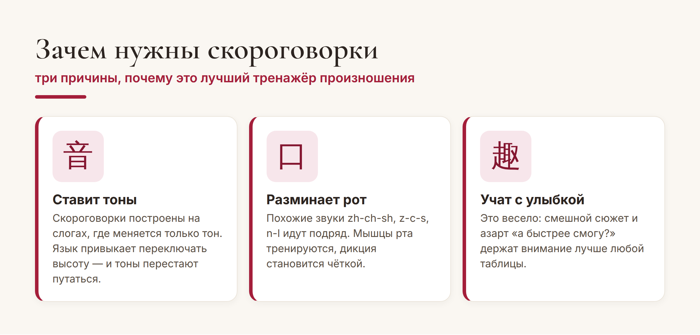
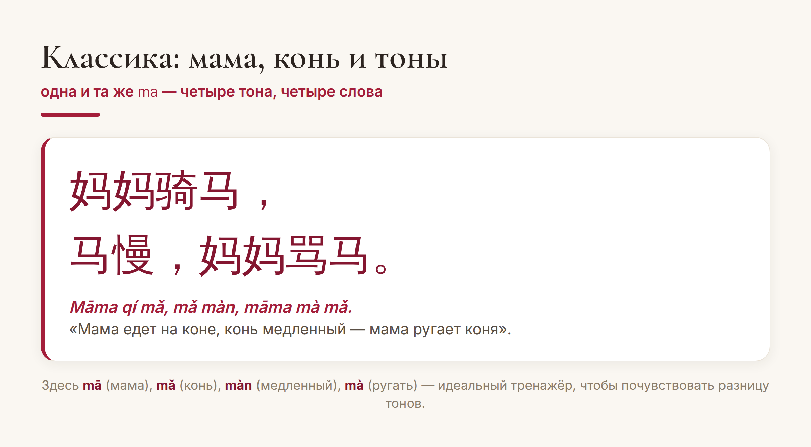
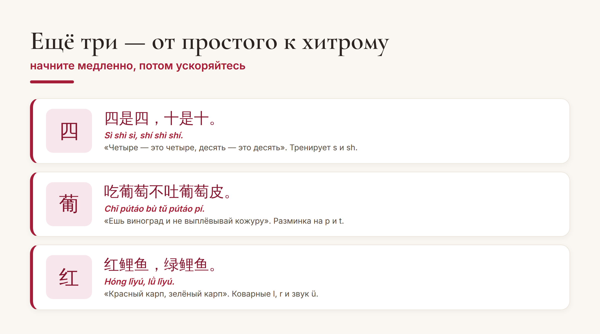

Китай · язык

Тоны и «шипящие» звуки — то, что чаще всего пугает в китайском. И есть удивительно приятный способ их приручить: скороговорки, по-китайски 绕口令 (ràokǒulìng). Это не скучная зубрёжка, а игра, в которой язык сам учится переключать тоны и чётко произносить сложные слоги.
Расскажу, почему они так хорошо работают, и дам четыре скороговорки с разбором — от самой простой до по-настоящему коварной.
Скороговорка нарочно набита похожими слогами, где меняется только тон или один звук. Проговаривая её, вы заставляете рот и слух делать именно ту работу, которая тяжелее всего даётся новичку.

Плюс это просто весело. Азарт «а смогу быстрее и без ошибок?» удерживает внимание куда лучше, чем сухие упражнения, — и вы занимаетесь произношением, почти не замечая усилий.
Самая знаменитая китайская скороговорка — про маму и коня. Она целиком построена на слоге ma в разных тонах, и это лучший способ раз и навсегда почувствовать, что тон меняет смысл.

Проговаривайте медленно, выделяя каждый тон: 妈 (mā, ровный) — мама, 马 (mǎ, «падает-встаёт») — конь, 慢 (màn, падающий) — медленный, 骂 (mà, падающий) — ругать. Когда фраза начнёт звучать чисто — ускоряйтесь.
Освоили маму с конём? Держите ещё три скороговорки на разные сложные звуки:

Самая коварная — про карпов: 红鲤鱼，绿鲤鱼 (hóng lǐyú, lǜ lǐyú). В ней сталкиваются l, r и хитрый звук ü — на ней спотыкаются даже те, кто уже неплохо говорит.
Несколько простых правил, чтобы скороговорки действительно ставили произношение:
Сначала медленно. Скорость — не цель, а награда. Сперва добейтесь чистого звука и правильных тонов, и только потом ускоряйтесь.
Слушайте образец. Найдите аудио носителя и повторяйте за ним — так вы копируете и звуки, и мелодику.
По чуть-чуть, но каждый день. Две минуты в день дадут больше, чем час раз в неделю.
Совет. Запишите себя на телефон и сравните с носителем — это лучший «детектор» тонов. А ещё скороговорки удобно повторять в дороге: они короткие и быстро запоминаются.
Вот и весь секрет: пара минут скороговорок в день — и тоны встают на место, а «страшные» zh-ch-sh перестают пугать. Начните с мамы и коня уже сегодня — и удивитесь, как быстро язык станет послушнее.
Чистого вам звука! 熟能生巧。